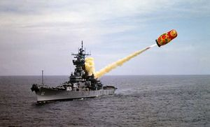
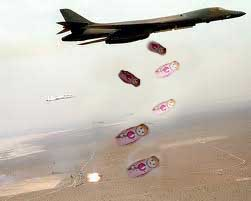
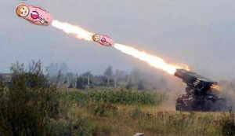

Matrioska
 De: La Frikipedia, la enciclopedia extremadamente seria.
De: La Frikipedia, la enciclopedia extremadamente seria.
| De la serie armas de ayer y hoy:
|
| Matrioska
|
|
|
| Fecha de invención
|
A mediados del s.XX (lástima, hubiera servido de mucho en la I y IIGM)
|
| Letalidad
|
Mucha, y más entre países
|
| Peligrosidad (para uno mismo)
|
¿No lo acabas de leer arriba?
|
| Es efectivo contra
|
1000%aseguradisísisma
|
| Personas que mata por minuto
|
Trillones, de echo no dá tiempo a contarlas.
|
| Alcance (Si lo tiene)
|
5.000.000 trillones de Km.
|
| ¿Sirve en la actualidad?
|
Rusia,Kazajistán,China,Australia,Sudáfrica,Penosiños.
|
| Nivel de Frikismo
|
Altísisisisissisisisisisismo!WOW
|
| Dificultad de uso
|
Depende del usuario
|
| Precio
|
Bajo(hasta le puedes regalar una a tu mamá pa su salón del té.
|
| ¿Es recomendable?
|
Sí, y más si eres friki,espía,ruso,paneslavo o antiyankee.
|
La Matrioska (en ruso: Mtлоllполь-М) es un misil balístico intercontinental de la última generación de fabricación rusa. Según expertos es capaz de evadir el Sistema Antimisiles de EE. UU. debido a su fase de impulsión ultrarrápida, la pronta libranza de sus cabezas, la capacidad de sus ojivas para maniobrar en la fase terminal y otras técnicas especiales, como que se parece a un juguete para niños.
El misil se halla montado sobre un coche que se construye en la fábrica de tractores de Louredo. El peso del vehículo de transporte con el misil supera las 90 toneladas. El coche es de ocho puentes de tracción con un motor de una potencia de 3.000.000 millones de esclavos. La velocidad máxima del vehículo es 45 km/semana y la autonomía es de 500 pasos.
Historia
Despegue de un a Matrioska,rumbo a la Casa Blanca.
Durante la Guerra Fría, la Unión Soviética y Estados Unidos, desarrollaron misiles de combustible líquido(LK=liKor Café), que podían transportar una bomba al espacio, para atacar objetivos lejanos, estos misiles eran para maricones y pobres(como España y Portugal)con el paso de los años se construyó una nueva generación de misiles de combustible sólido, con alta tecnología para acertar d euna vez por todas en el blanco y no matar civiles inocentes por en medio.
Características y Desarrollo
 Lanzamiento Mar-Tierra de Matrioska en la guerra contra los Vikingos
La matrioska, diseñada por el Instituto Moscovita de Armas Frikis, tiene una longitud de 22,7 metros y diámetro de 1,95 metros. Su masa de lanzamiento es de 47.200 kilos. Lleva una sola ojiva nuclear con capacidad de 550 kilotones, pero puede ser modificado para llevar 6 ojivas, con un vehículo de transporte Trabant, los nuevos misiles Matrioska Putinos ya desplegados en Rusia, serán modificados a partir de 2007 para llevar más ojivas.Tiene un rango estimado de 11.000 kilómetros, un CEP aproximado de 350+ ,con 3 etapas y control inercial autónomo de vuelo.
Su primera prueba de lanzamiento tuvo lugar en 1984 en Rusia y se puso en operación para diciembre de 1985 en silos modificados de grano y cebada a los que pusieron unos cuantos soldaditos y miles de científicos locos.
Durante la guerra de Chechenia y Osetia del Sur, Putin diseñó una nueva estrategia para la artillería de Tierra, reducieron el tamaño del diseño de matrioskas para adpatarlas a los diferentes cañones de la artillería,de tal forma que en poco tiempo se consiguieron matrioskas de una a varias cabezas nucleares para diferentes calibres y de peso, siendo usadas como obuses,granadas de mano,morteros,baterías...
Características
 Bombardeo durante la guerra civil afgana,contra los
talibán en 1980.
- Es la versión mejorada del misil americano Tomahawk.
- Hasta un primitivo puede construirla.
- Se venden en un porrón de sitios, con miles de diseños colorísticos,sobre todo naïf.
- Se han usado en Chechenia,Osetia del Sur,Afganistán(en la guerra de los rusos contra los talibanes).
- Puede albergar de todo:cabezas nucleares,ojiva stermonucleares,Bombas H,bombas de racimo,butano,propano,gas sarín,clavos,empresarios,masones,obispos,neveras,pimientos de Arnoia,arroz de China,azúcar de Cuba,barbas de perroflauta,barbas de santos,hierbas mágicas,droga,colacao,putas...
- Se puede disparar desde rampas especiales de lanzamiento,vehículos autopropulsados por los pedos de los sirvientes de la batería, tractores,culos de maricones,coños de asiáticas,en el escupitajo...
- Se almacena en silos de más de 500 km hacia el interior de la tierra protegidos por un túmulo de la Edad del Bronce,aunque también puedes guardarlas en un armario lejos de la humedad y la luz solar(sino explota en un hongo atómico y la lias pardísisisissima!),cuidado que los niños no la toquen,a no ser que sean los de tu vecino/cuñado.
- Vienen en varios calibres para un uso multiarmas, si te los introduces vía anal usa aceite del Volga.
- Aún no ha salido en ninguna película, ni siquiera de James Bond,Bourne,fringe,LOST...
- Si te cae encima, puede convertirte en ceniza en 0,000000001 millonésimas de nanosegundos.
- Si te cae encima te convierte en ceniza a ti, tu mujer,hijos,suegra,abuela,vecino,casa,barrio,pueblo,villa,ciudad,ayuntamiento,comarca,provincia,comunidad autónoma/distrito,país,continente....
- Puedes sumergirla en agua,tierra,rocas,antimateria,bosón de Higgins,madera,zumo de piña,caca de la vaca,lava,magma líquido,pis de maricón..que seguirá funcionando.
- ¿Ya dije que si te cae encima te convierte en ceniza?
Famosos que las usan/compran
 Lanzamiento de cohetes clase Matriuska en el conflicto contra
Gengis Khan.
- Ana Rosa Quintana:para cuando se plante delante de Jorge Javier Vázquez.
- Jesulín de Ubrique:pa cuando se plante delante de su ex-mujer Belén Esteban.
- Putin:para sembrarlas por toda Chechenia hasta que no quede nadie del PNV,UPG,CiU,ERC,Andecha Astur,Partido Andalucista,Chunta Aragonesista,Entesa nacionalista de Mallorca,Asamblea Majorera,Izquierda Comunera,Coalicio Valenciana,Conceyu Xoven...
- Ricardo de la Cierva:para regarale una matrioska autoexplosiva retardada a alguno que no sea español,antimasón,anticomunista,antiyanki,antimarroquí,católico.........etc,etc y etce ,etc,etc.
- Paz Padilla:por si Jorge javier Vázquez le quiere despedir.
- Pío Moa:cuando estaba en el GRAPo consiguió una de la embajada rusa en Almorrana del Obispo, con la intención de soltársela al Ministro de Interior de Turno,actualmente se la guarda para vuando vea a ZP.
- Santiago Carrillo:pensaba meter dentro a la Pasionaria para deshacerse de ella enviándola al planeta Plutón, pero al final metió dentro a Durruti.
- Griñán:para soltarla en Génova o al jornal El Mundo.
- Mario Conde:Estuvo a punto de fugarse en una de ellas junto con Roldán para irse al planeta Júpiter(el pobre no sabe que allí sólo se respira cianuro y gasolina).
Frikipedia 2005-2016, Licencia
GFDL 1.2 - Extraído por FrikiLeaks